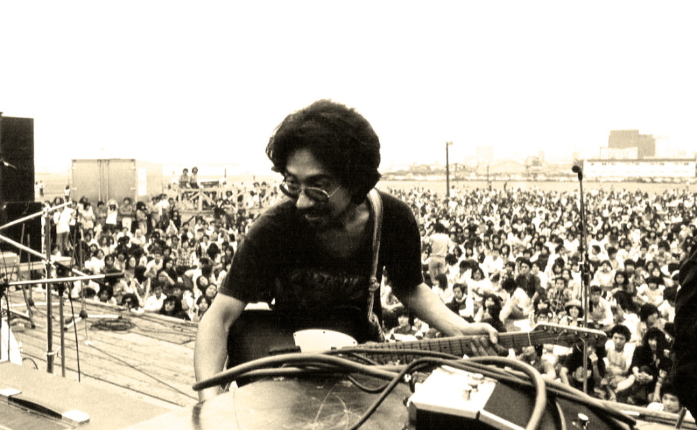
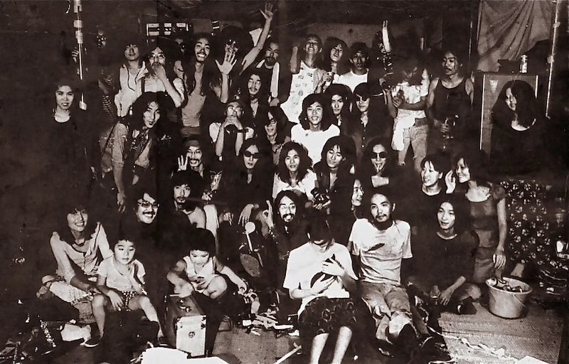
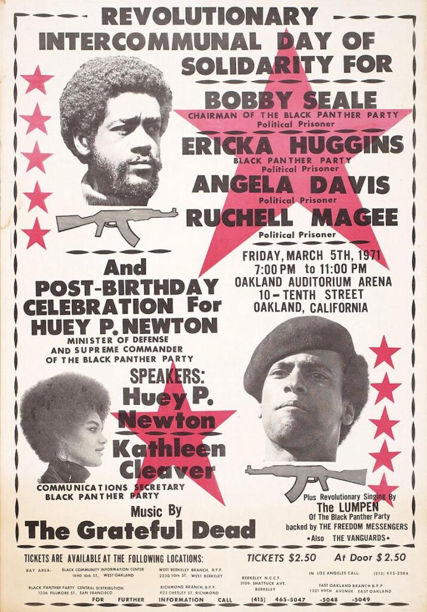
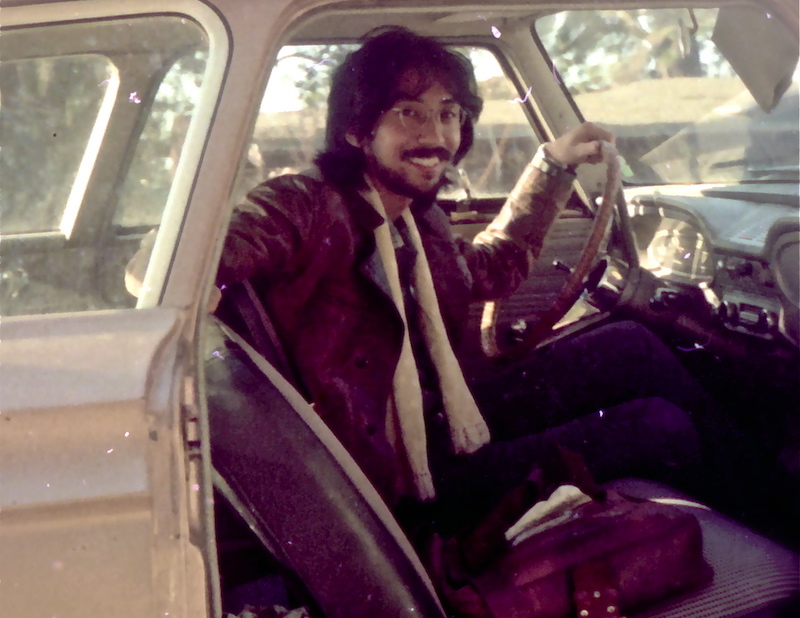
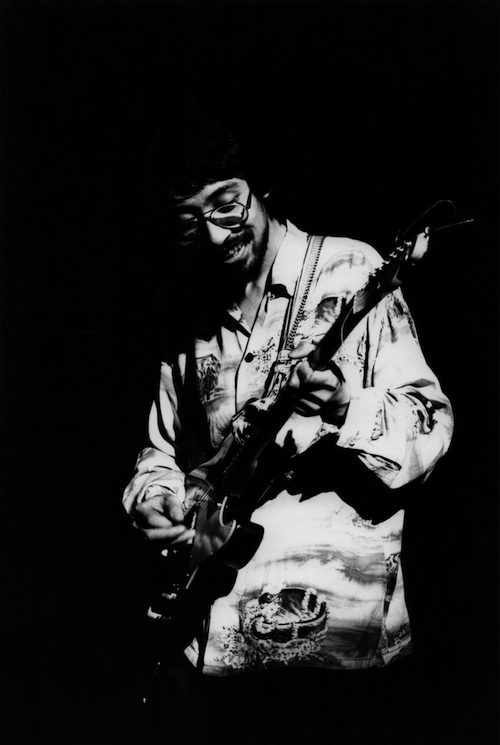

久保田麻琴 :: 在Aquarium Drunkard的采访
Posted on AquariumDrunkard; Makoto Kubota; The AD Interview

当被问及他在五年的音乐生涯中最引以为傲的是什么时，久保田的回答并不简单。这位出生于京都的高产的歌手、作曲家和制作人从来没有回顾过他过去的作品，就像他的老朋友和合作者细野晴臣一样，久保田永远保持谦逊，更愿意让音乐来说话。久保田与cult噪音先锋Les Rallizes Denudes的合作可能会引起西方听众的好奇，但对他来说，这只是他长长的、令人印象深刻的履历中的一个小插曲。有人称他为日本的Ry Cooder，这也许并不是描述他作为一个音乐人的感受力和他音乐哲学的准确方式。
久保田在60年代的关西民谣界起步，与金延幸子(sachiko kanenobu)等志同道合的音乐人一起，在URC厂牌上演出。与大学同学水谷孝的友情使得他加入了水谷的乐队Les Rallizes Denudes。通过他在美国反文化式的Cheech & Chong式旅行，他在70、80年代与Sunset Gang和Sunsetz的世界性名声擦肩而过。作为一个高产制作人，久保田开创了一个独特的职业生涯，为他赢得了现在作为日本摇滚乐的帅气老政治家的地位。归根结底，久保田只是一个音乐爱好者，将好音乐的福音传播到全球各地，无论是通过他自己的音乐，还是支持其他人的作品，比如他心目中的冲绳音乐传统民谣(minyo)。这当然是他可以自豪的事情。
当冠状病毒在全球范围内肆虐时，久保田一直在东京的家庭工作室里忙碌着。他从网上找到的那些年轻的lo-fi音乐人身上寻找灵感，同时以他80年代开发的采样器的为基础学习如何使用最新的效果器和设备制作音乐。最近，他将自己在70年代的几张广受好评的专辑进行了重制并重新发行，其中包括与Sunset Gang合作的经典专辑《Hawaii Champloo》。
在这些最新的重制版之际，我们与久保田进行了一次长时间并且广泛的对话，一直持续到凌晨。久保田回顾了他的一生和许多成就，从在被美国爵士乐包围的电影院里长大，在奥克兰的黑豹集会(Black Panther rally) 上看到Grateful Dead，他与Levon Helm的友谊，以及在Last Waltz吃下最后一片火鸡。以下是4个小时谈话的摘录–这是极少数被翻译成英文的对久保田的采访。 文字与翻译:Y. Kitazawa
**Aquarium Drunkard:**重制版专辑听起来很棒。您是如何亲自完成混音的？
**久保田:**在70年代，日本还没有母带制作的概念。对我来说，这一直是一个挫折的来源。我可以把录音带录得很好，但当它被切成黑胶唱片时，我不得不站在那里静静地看着。如果我建议他们提高音量，他们会说不，这在技术上是不可行的，因为针会跳动。唱片公司的母公司是音响公司，比如维克多(Victor)，如果我们这样做，上面会有抱怨。在日本有一段时间是这样的，但渐渐地母带就成了一件重要的事情。
今年Ultravybe从Trio买了母带。他们打电话给我说，如果我们要做，就好好做吧。我做了十几年的母带工程师，所以我要求他们让我来做。包括几张混音的专辑，总共大概有60-70首。在电晕封锁期间，我就在做这个工作。
AD: 你想看到这些唱片在日本以外的地方重新发行吗？
久保田： 我对谁能听到这些唱片没有偏好。我并不执着于此。我自己的音乐只是我和音乐关系中的一部分，所以我不认为它能代表我是谁。我在我所做的事情和我是谁之间保持一定的距离。
AD: 所以你不听自己过去的音乐？
久保田： 没有，我已经大部分忘记了。当我在重新制作专辑的时候，我就在想，这其实是很不错的! 但我很少听我过去的作品。比如Les Rallizes Denudes的。我已经忘记了这部分内容。但当我去看Sachiko在中央公园[在2019年]与Steve Gunn和Yo La Tengo的家伙一起演出–他们都知道关于Rallizes的很多事情。这完全是一个惊喜。Rallizes的官方录音太少了，大多是bootleg。

AD: 你是怎么和Les Rallizes Denudes一起演出的？
久保田： 我在乐队刚开始的时候加入了大约两三年的时间。乐队的第一代成员都是那种激进和政治化的人。这就是他们的形象。迷幻而又政治化。我是在乐队迭代之后加入的。这是在1970年。我一定是20岁左右。
AD: 那时候乐队的激进形象已经消失了吗？
久保田： 那时候，那种形象已经平复了。当时只有我和水谷，还有一个偶尔打打下手的人。但就在同一时间，有一位前成员劫持了一架飞机，去了朝鲜。我们很震惊，但觉得这不是我们的问题。那段时间我们通宵录制了一盘录音，我还保留了一盘磁带。那是我制作的第一张唱片，叫_Mizutani_。我们是在一个晚上完成的，从很晚开始到第二天早上完成。当时我们就读的同志社大学有一个广播室。我在家里用两台索尼录音机做了一些录音实验，用乒乓技术复制和配音录音，所以我知道在磁带上录音。但当时没有调音台什么的。
AD：你这时已经认识幸子了吗？
久保田： 那时候我已经见过她好几次了。
AD: 你是在关西民谣界认识她的吗？
久保田： 是的，不过我并不是那个场景的一部分。我也没能深入其中。但我其实买了Gu single。我是个粉丝。所以当我勾搭上URC的时候，我问他们能不能把我介绍给她。我不记得我们是当时就见面了，还是一开始就在电话里聊了起来。但是幸子开始来京都看我，和我一起玩。从美国回来后，我就给她安排演出之类的事情。后来她在东京制作Misora_的时候，她说我应该在录音期间去拜访她。于是我就去了。那是我第一次见到细野先生。我当时就想，这就是_Happy End!
AD: 那是哪一年的事？
久保田： 大概是1972年吧，我被抓了之后就开始了。从美国回来后，我还过着美国人的生活。
AD: 什么叫被抓？
久保田： 我被逮捕了
AD: 等等，为什么？
久保田： 我在种植大麻，并把它给大家。我把美国人的生活方式直接带回了日本。
AD: 当初你为什么决定去美国？
久保田： 哦，那是因为我从小就喜欢爵士乐。我从小就听着很多音乐长大。乡村唱片，比如Hank Williams，就摆在家里，还有Doris Day。中学的时候我喜欢上了Miles Davis，我记得也听过Ray Charles的歌。我家是开电影院的，我爷爷年轻的时候就开始经营了，大概自100年前的无声电影时代。电影院是我们的家。奶奶在那里开了一家酒吧，主要是为了好玩。里面有一个点唱机，里面放满了国外的流行唱片。有一天，我听到了Miles Davis的歌，我惊呆了。我从来不知道那种音乐的存在。我开始迷恋上了爵士乐。那时候，国外的音乐人也开始来日本了。在我十几岁的时候，我就看到了Duke Ellington的演出，他的60年代那个有名的乐队是他最好的乐队。我可以说出乐队所有成员的名字。Johnny Hodges，传奇的独奏家。Paul Gonzalves, Harry Carney, Cat Anderson, Cootie Williams. 那时候电影院的生意不是很好，所以他们开始举办演唱会，爸爸没有推广Ellington的演出，但他在电吉他开始流行的时候举办了风险投资公司的演出，他还做了Sam “The Man” Taylor。情调萨克斯(mood saxophone) 在当时是最流行的，我很喜欢Sam的音乐。他也做过The Platters，在一些日本明星的节目中。我的爸爸，第二代老板，有朋友是音乐会的发起人，他会告诉他们，他的儿子是爵士乐的忠实粉丝。所以我在上中学的时候，就看到了Cannonball Adderley Sextet的最佳状态，有Yusef Lateef和Joe Zawinul。我当时就已经知道，我想去这个音乐的发源地。当然，好莱坞电影也有影响。我基本上被美国文化洗脑了[笑]。我的脑子里装的都是当时日本人脑子里通常没有的东西。
遇到Rallizes的时候，我还是这种心态。水谷会跟我说起旧金山的所有乐队。还有地下丝绒乐队。基本上都是关于66-67年的英国迷幻摇滚乐。当时我就知道，光听唱片是不够的。这些音乐是在一个完全不同的世界里产生的，我必须去感受空气的震动，去亲身体验。
AD: 你到了美国之后，都呆在哪里？
久保田： 我基本上在伯克利、旧金山和纽约之间分配我的时间。当时纽约是冬天，我的邻居在皇后区的阿斯托利亚有一个地方。他在曼哈顿工作，我每天坐地铁去东村闲逛。我会去买便宜的剪贴唱片。我喜欢Vanguard唱片公司，比如Richard Farina，John Fahey，Richie Havens，我很喜欢他。Richie Havens，我喜欢他。菲尔莫尔东区还在，我每周都会去那里。哦，你看，Tim Buckley在表演！Judy Collins，不可思议的弦乐乐队。感恩而死乐队和杰弗逊飞机乐队的演出已经很卖座了。还有Frank Zappa，所以那些人我没看到 。但我看了泰姬陵。
对于感恩而死乐队，我一直在想，我看不到他们了。他们总是会卖光，或者在一些遥远的户外演出，有一两万人。那时候正好是_American Beauty_出来的时候，他们也开始这样大肆宣传。但命中注定，回到奥克兰，就在我要回日本之前，我看到了一张黑豹组织筹款活动的海报。当时所有的黑豹组织高层都被捕了：Stokely Carmichael, Angela Davis. 特邀嘉宾恰好是感恩而死乐队。而且是在一所高中的体育馆！所以我跑到了黑豹的办公室，虽然我有点害怕，但我还是拿到了一张门票。

黑豹党革命跨党日声援鲍Bobby Seale, Ericka Huggins, Angela Davis。还有Huey Newton和Kathleen Cleaver的演讲。体育馆大概容纳了2、3千人。黑豹组织和他们的黑人支持者在前面，倾听并向演讲者欢呼。白人嬉皮士在后面。演讲结束后，所有的黑人开始离开，白人嬉皮士走到前面。我不会说这是阴和阳(yin and yang)，但也许就像油和水。在这个过渡期间，有些人发生了一些争执，有些人吵了起来。这个时候感恩而死乐队已经开始调音，做他们的音响检查了。对我来说，只要听到这些声音，空气中就充满了幸福感，甚至在他们开始演奏音乐之前。当他们开始演奏的时候，只剩下了1000人左右。
AD: 感恩而死被邀请在活动中演出，是否是为了黑豹党能获得白人嬉皮士的支持？
久保田： 不知道，我想这只是为了让他们能筹集更多的钱。虽然我听不懂演讲者在说什么，但也能看出他们有很多愤怒的情绪。演唱会只有一个小时左右的时间。我想他们演奏了Workingman’s Dead 和 _American Beauty_中的十首歌。那是我看过的感恩而死中最棒的一次，是我最棒的经历之一。
AD: 在日本制作第一张专辑Machibouke时，你心中有什么特别的声音或风格吗？
久保田: 在70年代初，我还是个嬉皮士。被捕时，我被关进了拘留所。这让我有了成为作曲家的动力。我在那里呆了大约两个星期。我读了黑塞，我读了那本书后，真的很兴奋。那是一段艰难的时期，但同时我认为那正是我所需要的。这真的很奇怪。我不能到处走动，但我感觉比吸毒时还大。那时候我写的诗就成了Machibouke。那张专辑就是因为那段经历而存在的。说起来，我对那张专辑的感情并不深。我有很长一段时间没有听它，好像觉得它太难为情了。
AD: 为什么会这样？
久保田: 就是我觉得没意思吧……我还是不想听。别人告诉我说很好听，我就觉得还行吧，我想也是。
AD: 你对Sunset Gang的专辑有这种感觉吗？
久保田： 我也是这样想的。不过Hawaii Champroo是很有趣的，作为一个乐队。那张专辑在那个特殊的时期发生了一种特殊的魔力。我开始和细野一起在Sunset Gang工作。他成了我的好朋友，我们经常谈论一些有趣的事情。
AD: 由细野制作的\Hawaii Champroo融合了夏威夷和冲绳的风格。细野的Tropical Dandy*也是在同一时间发行的，也有类似的风格。你们俩是在说要做类似的专辑吗？
久保田： 他们几乎就像兄弟姐妹的专辑。我们一直在讨论这些事情。它们仍然以美国的根基音乐为基础，带有一些冲绳、亚洲的色彩。我在73年或74年左右去了冲绳，看到了这首喜納昌吉的“Haisai Ojisan”。好像是71年的录音。我被震撼了。我给细野先生播放时，他也被震撼了。当时没有其他音乐人听过这首歌。当时只有我和细野两个人非常兴奋。就像美国音乐人第一次听到雷鬼音乐一样。在Hawaii Champloo发行的那一年，正是我们为Clapton开场的时候。有趣的是，那时候我还没那么喜欢毒品，但有个乐队成员差点因此被捕，他在逃亡中。他和我们一起在夏威夷录制专辑，但现在他不能回家了。所以他决定去横跨美国旅行。当克莱普顿的巡演得到确认时，他正巧给我们写了一封信，说他正在圣路易斯的某个餐厅洗盘子。我们给他回了信，告诉他别傻了，我们要为Clapton开场，所以你最好回来! 所以他回来了，准备面对逮捕。在我们做了八场演出，在武道馆演出了两场之后，他就准备去自首了。但那时他被告知，他的案子已经结束了，他是一个自由人。就像Cheech & Chong，就像一部喜剧。在那张专辑中，就是捕捉到了这种感觉。有点脱离现实的感觉。
AD: Sunset Gang最终变成了Sunsetz，演奏风格完全不同的音乐。那是怎么发生的呢？

久保田： 70年代末，细野进入了YMO时代。当时的情况是，我们应该为世界做音乐。1980年的冬天，我第一次去了英国。当时从英国传来的音乐真的是充满活力和色彩的。美国当时的情况并不是很好，所谓的迪斯科融合时代已经没有创新的想法了。有像Talking Heads这样的乐队从纽约出来，但那时候Sex Pistols比New York Dolls这样的乐队更成功。英国感觉很光鲜。即使没有任何音乐技巧，只要有新鲜的想法、发型和化妆，任何人都可以成为推动力。那是一个奇怪的令人兴奋的时代。
有一次，Sunset Gang被一个美国经理人找上，想带我们去西海岸。那是1980年，我们已经在考虑乐队的结局了。我觉得我们不能为了讨好亚裔美国人的欢心，而假装成同一个乐队在美国演奏音乐。那个时候也有日本艺术家在美国演出，比如广岛，他们是日裔美国人，北岛大作，或者是一个叫East的乐队，濑户先生是我的好朋友。但是这些乐队很多都是把刻板印象发挥到了极致，比如穿着日本旧衣服，手里拿着琵琶。我觉得自己演不了那种角色。我对日本的了解也不多。我们得到的offer就是这种类型。
AD: Sunsetz在英国和澳大利亚都相当受欢迎吧？
久保田： 是的，特别是在澳大利亚。我们上了全国排行榜，我想是第三名。当然，像ATCO这样的大品牌也开始与我们接触，想在当时就签下合约。如果我再年轻一点，我可能会当场签约。但我记得当时我在想，这可能是我最后一次以全职工作的方式来做这件事的机会，所以我有点太小心了。出于某种原因，David Bowie喜欢上了我们。有一次我们一起玩了整整一个星期，他跟我说了很多事情，还试图给我建议。
AD: 你能告诉我你和乐队成员的关系吗？你是怎么认识他们的？
久保田： 我参加了他们为The Last Waltz所做的演出[在旧金山的Winterland Ballroom]。之后他们就解散了，Levon和Dr.John、Steve Cropper、Duck Dunn等人组成了RCO All Stars。他也有一个号角组。这真的是一个全明星乐队。因此，他们已经安排了一些日程在日本。麻田浩(Hiroshi Asada)，是这些演出的发起人，他让我去新奥尔良报道乐队的情况，作为巡演的预演。那是我第一次见到Levon，我想那是1977年，The Last Waltz之后的一年。我们相处得很好，他对我很好，给我吃的，还有其他一切。他看得出我不是一个典型的采访者。我给他带了一些唱片，所以他知道我是做音乐的。我当时也遇到了Allen Toussaint。他们一发现我也是个音乐人，就会打破僵局，变得更容易说话。Ry Cooder也是，我也是在那个时候认识他的。我跟他讲冲绳音乐，他也会跟我讲夏威夷。我们会交换我们的知识。

当RCO在日本演出时，Sunset Gang为他们开场。那是李文第一次看到我的演出，他非常喜欢。他觉得我做的事情真的很有趣。所以我们就商量着要一起做一些事情 我就给他放一些像 “Haisai Ojisan “这样的歌。我们直接去了录音室，开始录音，鼓手是李文。这首歌最后被收录在一张名为《Second Line》的专辑中，这也是Sunset Gang的最后一张专辑。它于1979年发行，但它是在1977年录制的。
AD: 大约20年后，你和细野在新奥尔良制作了一张专辑Harry & Mac，其中有Garth Hudson的几首歌。
久保田： 细野是Garth Hudson的忠实粉丝。他非常欣赏他那种独特的音乐，这使得他向Steven Foster或者Gershwin等美国大师致敬。当我们决定制作Harry & Mac的时候，我们知道我们想要Jim Keltner来做鼓手。那是我们首先讨论的事情。细野想不出太多的歌曲，所以最后大部分都是我写的。有一次，细野开始说他想要Garth Hudson过来。我们知道这不是一件容易的事，比如我们如何把他从Woodstock一路带过来？我们问了洛杉矶的工作室协调员，他把Garth弄来了。所以我们在录音室里花了三四天的时间。
AD: 你被乐评人形容为日本的Ry Cooder。你认为这是什么意思？
久保田： 我觉得我们在看待音乐和音乐人之间的关系上可能有相似之处。他和美国音乐的关系可能和我和音乐的关系很相似。我们做的音乐可能也有类似的震动。我们都迷恋冲绳音乐的方式。他很喜欢Joseph Spence和巴哈马音乐。我也很喜欢。这不是每个人都会喜欢的。在某种程度上，我们有相似的口味。我们喜欢这些东西可能是有原因的。我的祖先–也许Ry的祖先也是这样–经常搬家。经历了很多苦难，他们被撕裂，从一个地方移植到另一个地方，无论他们最后在哪里，都会重新开始生活。我经常提到《旧约》，这就像得救。这是一种很基督教的看法。所以也许Ry Cooder是被美国蓝调音乐所拯救的。我想Ry和我都对这些东西有很深的认识。他们为什么要这样唱？那种声音从何而来？这些想法都是灌输给我们的，也许。
AD：像是与音乐的精神联系？
久保田： 我们能够与音乐产生联系，并且能够意识到这一点。在不谈音乐的同时，也能意识到它的存在。Ry就像江户时期的人一样，他不屑于谈论这些东西。如果有时间，他宁愿弹吉他。
AD: 回顾你的职业生涯，你最自豪的是什么？不一定是你自己的音乐，也可以是你和别人一起做的东西。
久保田： 我还真没想过这个问题。我喜欢的东西有很多。但我觉得这都是偶然的，包括冲绳的事情，它打开了很多其他事情的大门。但这并不是我引以为豪的事情。我只是碰巧在那里。我想我很幸运，在正确的时间去了那些地方。我并不为我个人所做的任何事情感到特别骄傲，但我觉得自己很幸运，能有这样的关系。
在1975年我们为Clapton开场的时候，一个日本开场乐队经常会被日本观众嘘下台。对一个日本乐队来说，做开场嘉宾是一件很艰难的事。但当Sunset Gang演出时，我们居然在武道馆接到了要求安可的电话。所以这让我们有点高兴。后来我才知道，这是主办方第一次看到日本乐队得到观众这样的反应。我应该为这样的时刻感到自豪，但我总是在很久以后才意识到。
我参加The Last Waltz演出的时候，其实那天我是从日本飞过来的。由于某些原因，我飞到旧金山后，不得不坐国内航班到洛杉矶，租了一辆车，开车到国会大厦买了一张记者票，然后马上回到旧金山。等我到了冬岛，他们已经把最后的火鸡晚餐端上桌，直到最后一块。我是吃到最后一块的人。如果我没有吃到那块，我想我不会坚持到最后。我没有睡觉，几乎没有吃东西。所以我是那个在The Last Waltz中吃下最后一块火鸡的人。其实我真的很自豪！
以上为真实访谈。Aquarium Drunkard是依靠patrons的赞助运行的。我们通过patron来维持服务器运转，并且争取到一些独家采访，帮助我们可以继续做下去。For heads, by heads.